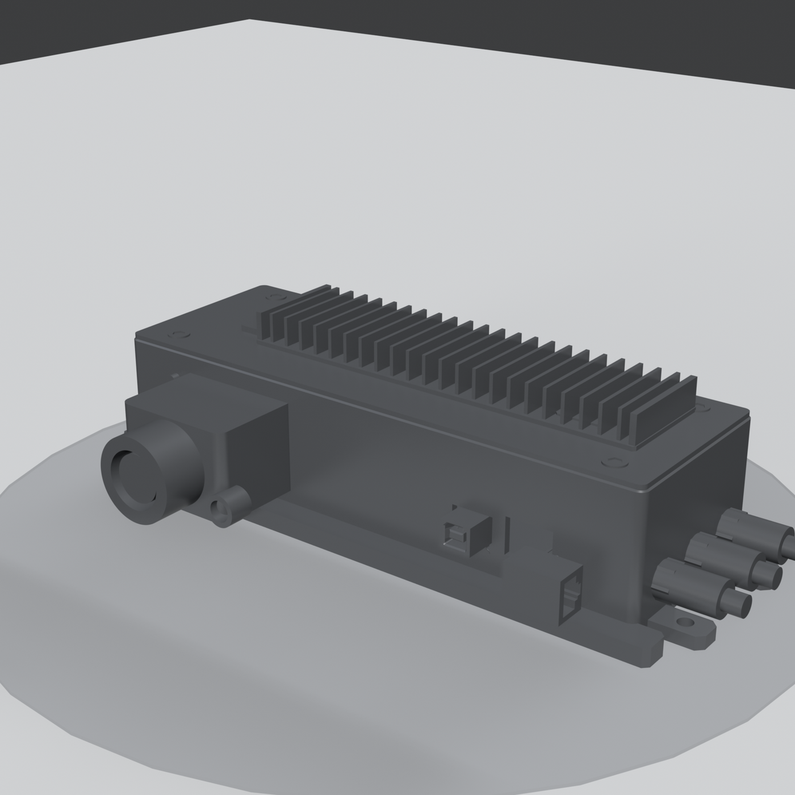
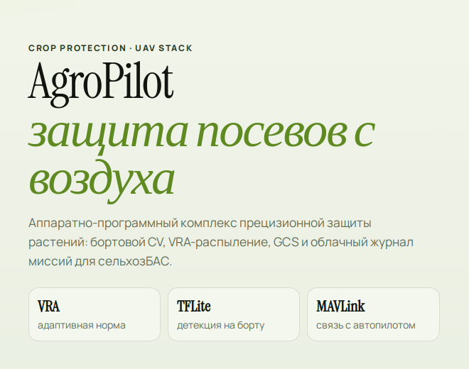
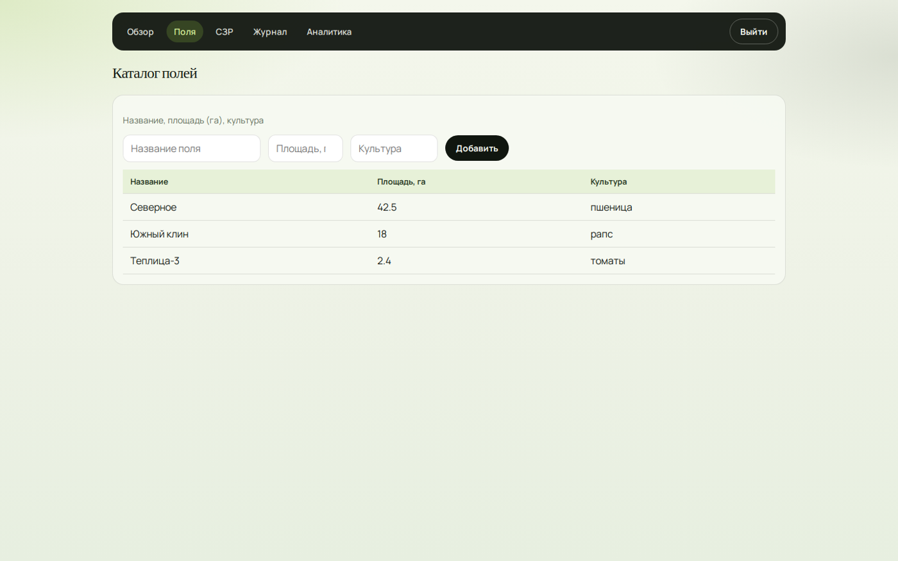
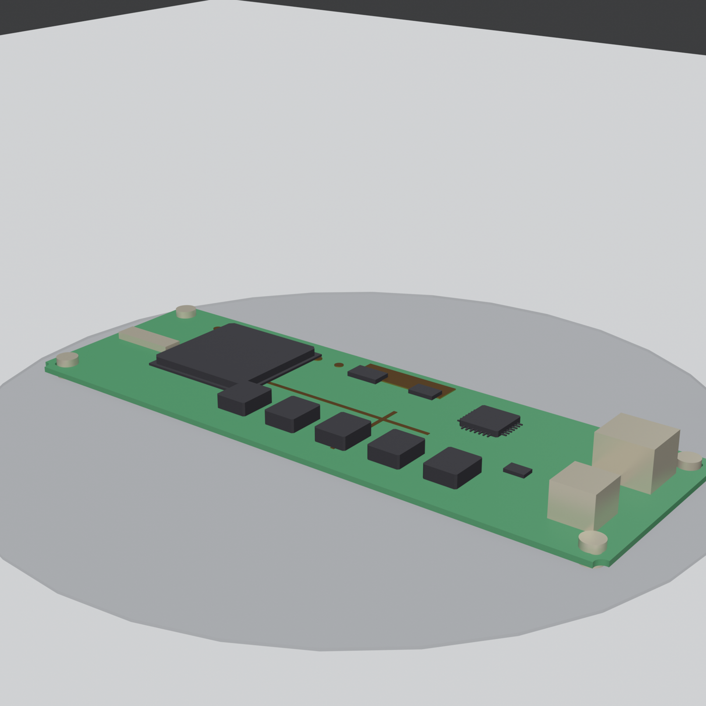
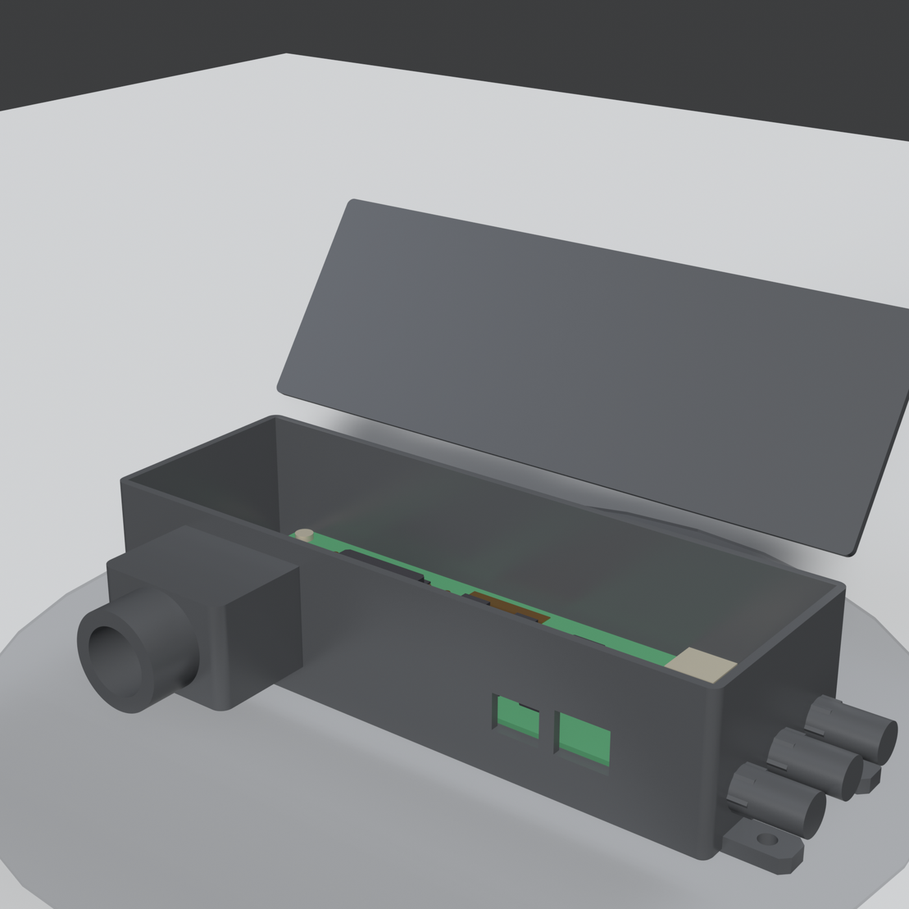

Бортовой companion-модуль
Компьютерное зрение и адаптивное распыление на борту дрона.
Многофункциональный агрокоптер и программный комплекс для мониторинга полей и прецизионной защиты растений
О проекте

Компьютерное зрение и адаптивное распыление на борту дрона.
Карта, трек полёта, маршрут миссии, видеопоток и телеметрия.

Поля, журнал операций, аналитика, справочник СЗР и отчёты.
AgroPilot · YnDrone — студенческий стартап, который создаёт многофункциональный агрокоптер YnDrone и программный комплекс AgroPilot. Комплекс объединяет три части: бортовой модуль компьютерного зрения и адаптивного распыления, наземную станцию управления и облачный кабинет агронома. Бортовой модуль подключается к полётному контроллеру по протоколу MAVLink, анализирует посевы и регулирует норму распыления. Разработаны программный комплекс, 3D-модели корпуса и печатной платы companion-модуля; проведена лабораторная отладка опытного образца, прототип подготовлен к полевой апробации.

Проект реализован при поддержке Фонда содействия инновациям в рамках программы «Студенческий стартап» мероприятия «Платформа университетского технологического предпринимательства» федерального проекта «Технологии».
В растениеводстве по-прежнему перерасходуют воду, удобрения и средства защиты растений. Болезни и вредителей выявляют поздно, данные о состоянии посевов разрознены, а импортные решения стоят дорого.
AgroPilot рассчитан на сельхозпредприятия и компании, которые обрабатывают поля с помощью БАС. Оператор задаёт контур поля, препятствия, точку взлёта и норму внесения, после чего дрон выполняет полёт автономно. Бортовой модуль анализирует посевы и корректирует расход препаратов в одном из трёх режимов: равномерном, по карте заданий или адаптивном на основе компьютерного зрения. После миссии отчёт уходит в облачный кабинет.
Создали сайт проекта.
Разработали продукт: бортовой модуль, наземную станцию, облачный кабинет и 3D-модели companion-модуля.
Провели лабораторную отладку опытного образца и подготовили прототип к полевой апробации.

Основатель проекта: Настапов Ярослав